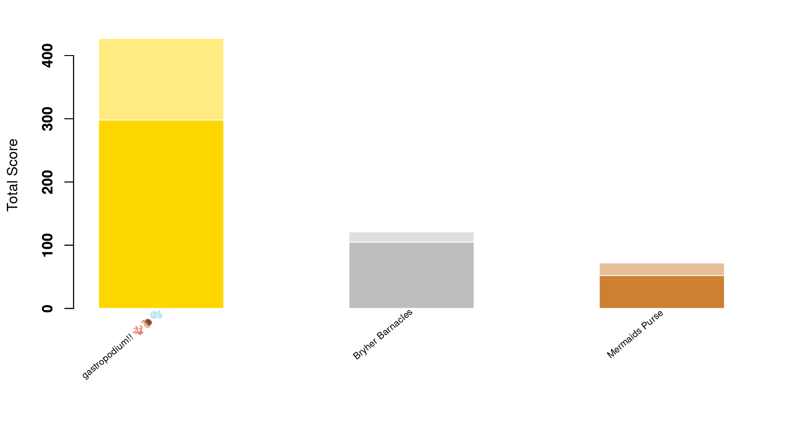

Content
You can view all the wildlife we recorded at this event on iNaturalist here.


| Records | 293 |
| Species | 88 |
| Verified species | 62 |
| Observers | 21 |
| Verified score | 2246 |
| Unverified score | 3125 |
| Top species | Rhodothamniella floridula - sand binder |
| Top species score | 41 |
Congratulations to gastropodium!! 🪸🐌🫧 for taking the gold medal in this BioBlitz Battle! And well done to everyone for a great game and some fantastic wildlife finds.

| Species | Potential Score | Confirmed Score | |
|---|---|---|---|
| kimbog | 46 | 904 | 432 |
| mr_h_martin | 30 | 447 | 290 |
| chloeburstow | 15 | 213 | 203 |
| aliceamalir | 19 | 246 | 135 |
| caz50 | 21 | 239 | 130 |
| mikealbiegemma | 9 | 130 | 111 |
| Ben Holt | 8 | 121 | 105 |
| oliveandgus | 14 | 113 | 97 |
| luccccccccyyyyyyy | 9 | 103 | 85 |
| douglaskidd | 10 | 100 | 80 |
| drjoecatchup | 6 | 63 | 72 |
| GUANGYU ZHU | 10 | 87 | 70 |
| tabbeetle | 6 | 68 | 68 |
| geomcperth | 6 | 63 | 63 |
| lachlang2002 | 6 | 74 | 60 |
| alexandrafwright | 5 | 72 | 52 |
| charliemateus | 1 | 36 | 36 |
| Phoenix Scott | 4 | 29 | 26 |
| sarahjane2003 | 3 | 31 | 17 |
| Lou Tee | 2 | 15 | 15 |
| Piers Warren | 1 | 9 | 9 |
A total of 4 species with a rarity score of 33 or higher have verified records:


Community verified records only
Click any image to view the original photo and licence details on iNaturalist.
| Name | Rarity Score | |
|---|---|---|

|
Corella eumyota - Orange-tipped Sea Squirt | 26 |
| Botryllus schlosseri - Star Tunicate | 12 | |

|
Larus argentatus - European Herring Gull | 7 |

|
Gobius paganellus - Rock Goby | 19 |
| Ammodytidae - Sand Lances | 18 | |

|
Ciliata mustela - Five-bearded Rockling | 16 |

|
Tritia reticulata - Netted Dogwhelk | 13 |

|
Nucella lapillus - Atlantic Dogwhelk | 8 |

|
Littorina littorea - Common Periwinkle | 8 |
| Crepidula fornicata - Common Atlantic Slippersnail | 11 | |
| Patella vulgata - Common European Limpet | 8 | |
| Patella ulyssiponensis - China Limpet | 29 | |

|
Elysia viridis - Sap-sucking Slug | 18 |

|
Phorcus lineatus - Lined Top Shell | 10 |

|
Steromphala umbilicalis - Purple Topshell | 9 |

|
Steromphala cineraria - Grey Topshell | 11 |

|
Lepidochitona cinerea - Grey Mail-shell | 10 |

|
Acanthochitona crinita - Bristly Mail-shell | 25 |
| Sepia officinalis - European Common Cuttlefish | 10 | |
| Acanthocardia | 14 | |
| Pholas dactylus - Common piddock | 26 | |
| Ostrea edulis - European Flat Oyster | 11 | |
| Mytilus edulis - Blue Mussel | 9 | |
| Pilumnus hirtellus - Hairy Crab | 26 | |

|
Maja brachydactyla - Spiny Spider Crab | 10 |

|
Cancer pagurus - Edible Crab | 8 |

|
Carcinus maenas - European Green Crab | 7 |

|
Necora puber - Velvet Swimming Crab | 9 |

|
Porcellana platycheles - Hairy Porcelain Crab | 10 |

|
Pisidia longicornis - Long-clawed Porcelain Crab | 16 |
| Palaemon elegans - Rockpool Prawn | 11 | |

|
Athanas nitescens - Hooded Shrimp | 33 |
| Talitroidea - Terrestrial Amphipods | 12 | |

|
Idotea balthica - Baltic Isopod | 21 |

|
Praunus flexuosus - Chameleon Shrimp | 38 |
| Harmothoe | 24 | |

|
Spirobranchus - Christmas Tree Worms | 12 |

|
Spirorbinae - Spiral Tube Worms | 14 |

|
Lanice conchilega - Sand Mason Worm | 14 |

|
Cirratulidae | 36 |

|
Anemonia viridis - snakelocks anemone | 8 |
| Actinia fragacea - Strawberry Anemone | 10 | |

|
Actinia equina - Atlantic Beadlet Anemone | 8 |

|
Amphipholis squamata - Dwarf Brittle Star | 13 |
| Psammechinus miliaris - Green Sea Urchin | 13 | |

|
Rhabditophora | 16 |

|
Ulva lactuca - Broadleaf Sea Lettuce | 10 |

|
Ulva rigida - Sea Lettuce | 30 |
| Ulva intestinalis - Gutweed | 9 | |

|
Ceramium - Banded Weeds | 17 |

|
Dilsea carnosa - Red Rags | 27 |

|
Mastocarpus stellatus - false Irish moss | 18 |

|
Chondrus crispus - Irish Moss | 10 |

|
Corallina officinalis - Common Coralline | 9 |

|
Lithophyllum incrustans - Pink Plate Weeds | 18 |

|
Palmaria palmata - Dulse | 14 |

|
Rhodothamniella floridula - sand binder | 41 |

|
Halopteris | 38 |

|
Sargassum muticum - Japanese Wireweed | 10 |

|
Fucus serratus - Saw Wrack | 8 |
| Fucus vesiculosus - bladder wrack | 8 | |

|
Saccharina latissima - Sugar Kelp | 12 |